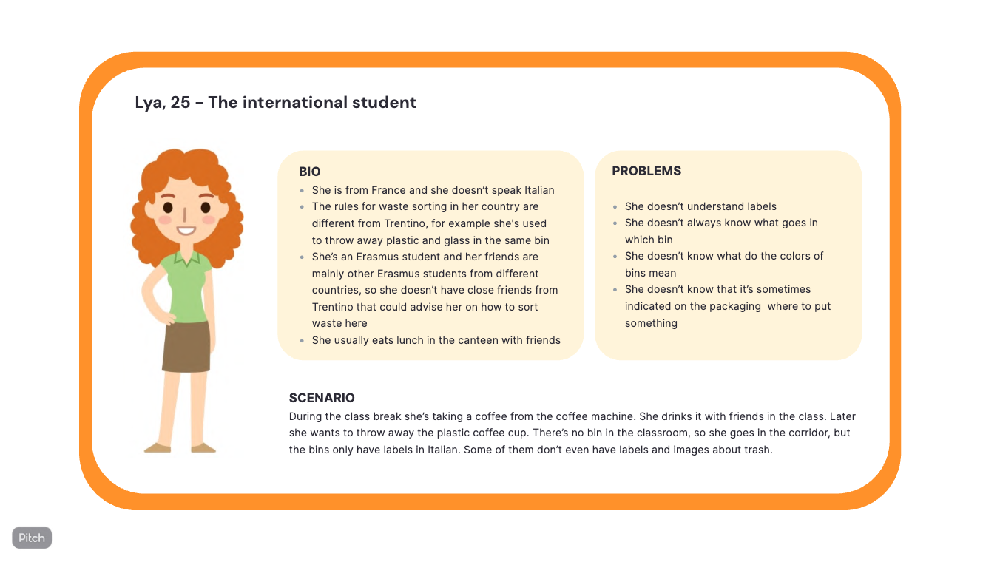
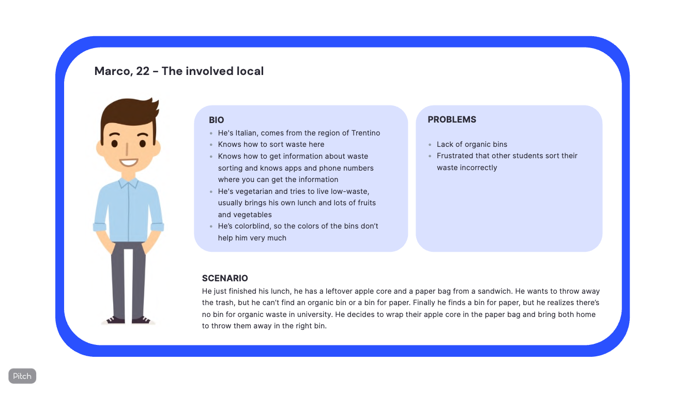
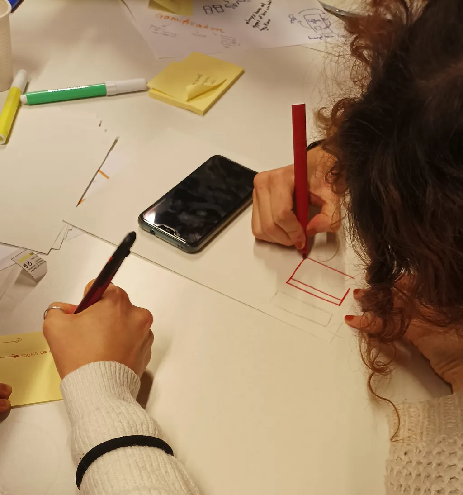
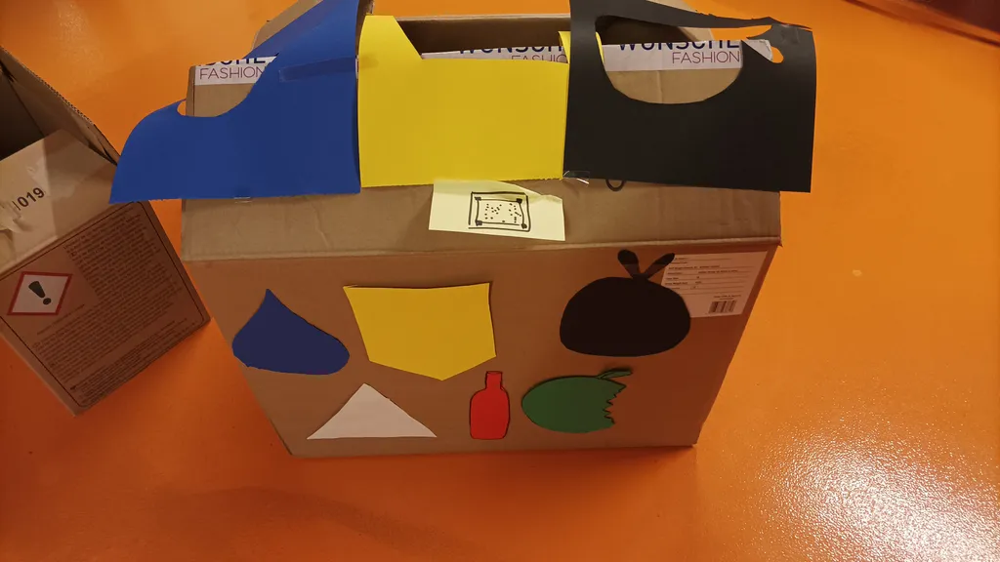
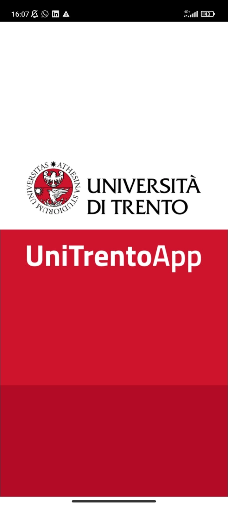
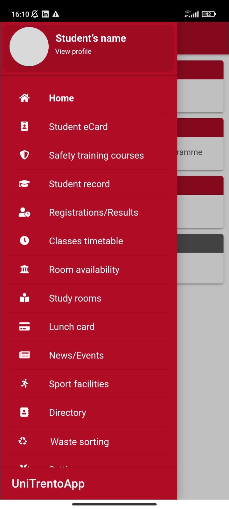
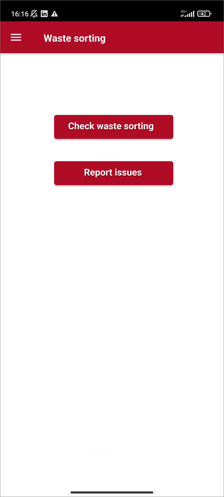
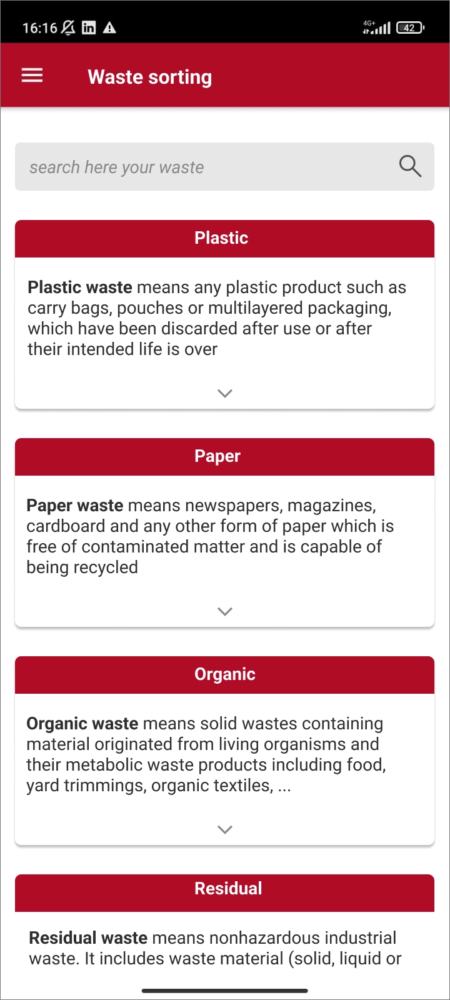
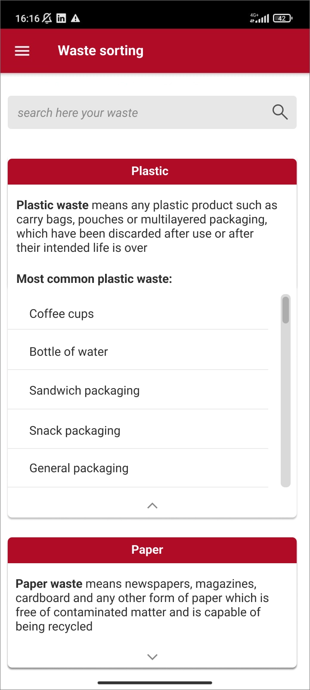

Enhancing students' waste sorting experience through research and design.
Combining ethnographic studies, participatory workshops, and digital solutions.
Waste Sorting @ University explored students’ attitudes and behaviors around recycling to improve the campus system. Over 5 months, we combined ethnographic research, interviews, and participatory workshops to redesign bins, create wireframes for a waste sorting app, and produce visual guidelines, making recycling intuitive, clear, and engaging.
Observations revealed confusion over bin placement, unclear labeling, and difficulty understanding proper sorting rules. Students often ignored recycling guidelines, or relied on ad-hoc solutions instead of the university system.
We began with ethnographic studies, observing students in key areas: gardens, vending rooms, and study spaces. We tracked confusion, difficulties in locating bins, and challenges in sorting waste.
Interviews and focus groups further revealed that:
These insights guided the creation of personas and scenarios for designing better physical and digital waste sorting solutions.
Based on our research, we defined user personas summarizing students’ behaviors, challenges, and motivations. This helped us prioritize problems and design solutions aligned with real user needs.


We ran a participatory workshop with 12 students. After reviewing personas, teams brainstormed solutions for physical bins and a digital app. Prototypes were created using paper, cardboard, post-its, and LEGO.


We redesigned the physical and virtual system for waste sorting:




